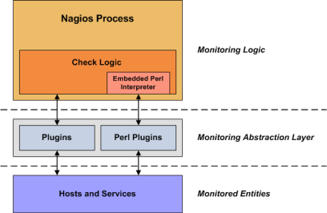

Up To: Contents
Up To: Contents
 See Also: Plugin API, Embedded Perl Interpreter Overview, Active Checks
See Also: Plugin API, Embedded Perl Interpreter Overview, Active Checks
Introduction
Unlike many other monitoring tools, Nagios does not include any internal mechanisms for checking the status of hosts and services on your network. Instead, Nagios relies on external programs (called plugins) to do all the dirty work.
What Are Plugins?
Plugins are compiled executables or scripts (Perl scripts, shell scripts, etc.) that can be run from a command line to check the status or a host or service. Nagios uses the results from plugins to determine the current status of hosts and services on your network.
Nagios will execute a plugin whenever there is a need to check the status of a service or host. The plugin does something (notice the very general term) to perform the check and then simply returns the results to Nagios. Nagios will process the results that it receives from the plugin and take any necessary actions (running event handlers, sending out notifications, etc).
Plugins As An Abstraction Layer
Plugins act as an abstraction layer between the monitoring logic present in the Nagios daemon and the actual services and hosts that are being monitored.
The upside of this type of plugin architecture is that you can monitor just about anything you can think of. If you can automate the process of checking something, you can monitor it with Nagios. There are already a lot of plugins that have been created in order to monitor basic resources such as processor load, disk usage, ping rates, etc. If you want to monitor something else, take a look at the documentation on writing plugins and roll your own. Its simple!
The downside to this type of plugin architecture is the fact that Nagios has absolutely no idea what it is that you're monitoring. You could be monitoring network traffic statistics, data error rates, room temperate, CPU voltage, fan speed, processor load, disk space, or the ability of your super-fantastic toaster to properly brown your bread in the morning... Nagios doesn't understand the specifics of what's being monitored - it just tracks changes in the state of those resources. Only the plugins themselves know exactly what they're monitoring and how to perform the actual checks.
What Plugins Are Available?
There are plugins currently available to monitor many different kinds of devices and services, including:
Obtaining Plugins
Plugins are not distributed with Nagios, but you can download the official Nagios plugins and many additional plugins created and maintained by Nagios users from the following locations:
How Do I Use Plugin X?
Most all plugins will display basic usage information when you execute them using '-h' or '--help' on the command line. For example, if you want to know how the check_http plugin works or what options it accepts, you should try executing the following command:
./check_http --help
Plugin API
You can find information on the technical aspects of plugins, as well as how to go about creating your own custom plugins here.